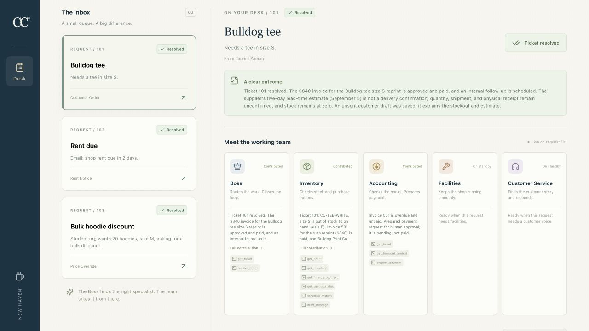
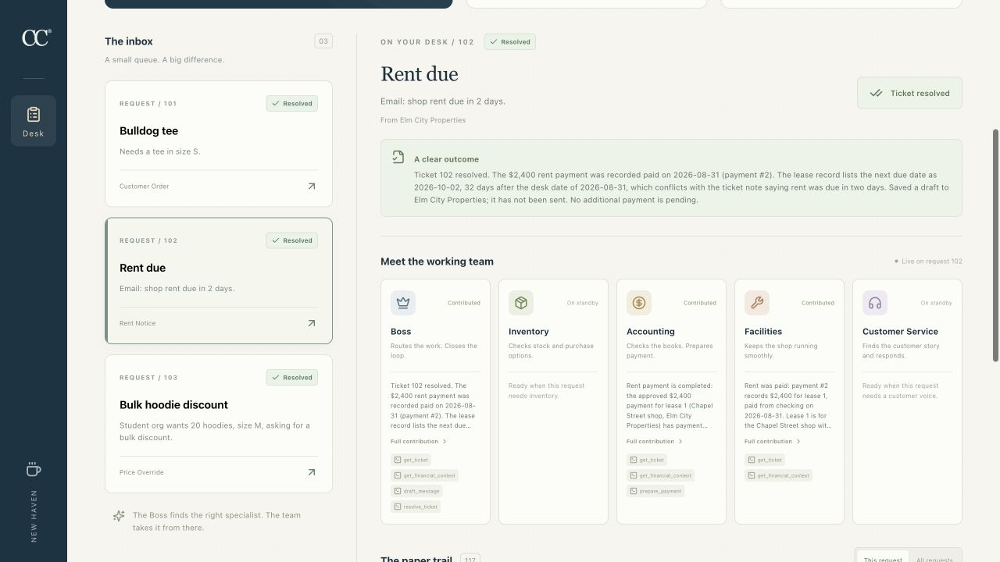
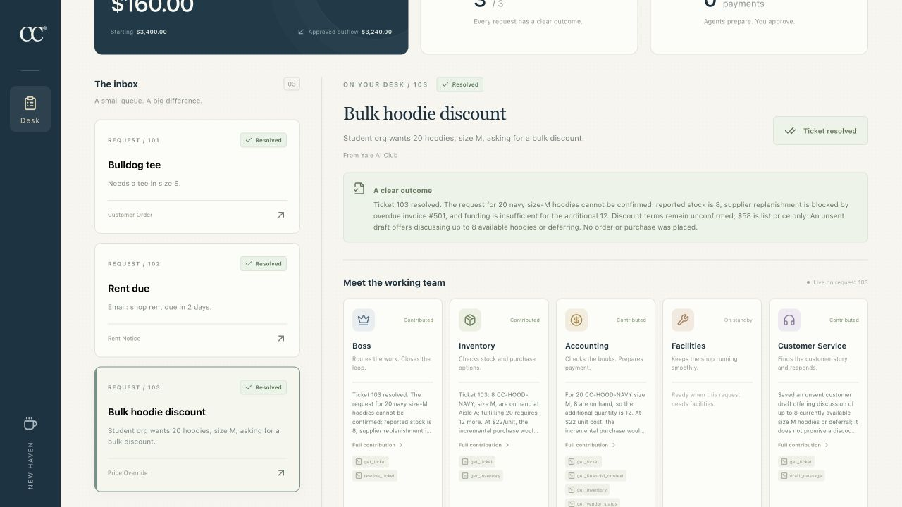

Three tickets. Recorded outcomes.
These are the existing screenshots captured from the real React board after each ticket resolved. The ticket outcomes and cash figures below were read from the final persisted state. Screenshots may show earlier cumulative cash before later tickets were completed.
Bulldog tee

Rent due

Review correction: the original rent due date was 2026-09-02. Payment 2 on 2026-08-31 advanced lease 1 by one month to 2026-10-02, as expected. The original ticket note about rent due in two days describes the pre-payment obligation; it is historical context, not a conflict with the updated lease. The final team summary called it a conflict, which is a verification/wording mistake. The payment and due-date transition were correct.
Bulk hoodie discount

Decision chronology: ticket 103 was evaluated and resolved before the two authorized payments. Checking then held $3,400.00, but invoice 501 was unpaid and Bulldog Print Co was blocked. Reserving its $840 invoice and the imminent $2,400 rent left $160 available for a discretionary purchase. The 12 missing medium hoodies cost $264, creating a $104 gap. The later invoice payment unblocked the vendor, but paying both obligations left $160 actual checking, so the $104 cash gap remained. The stored outcome records the decision-time vendor block; it is not a claim that the vendor remained blocked after the invoice payment.